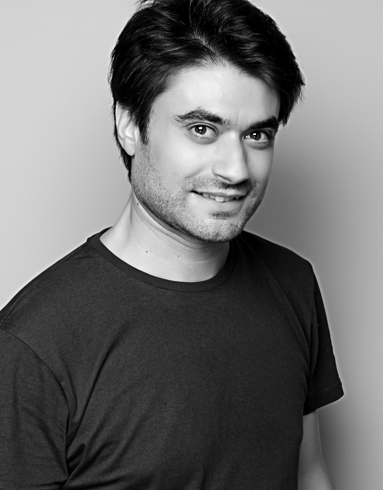
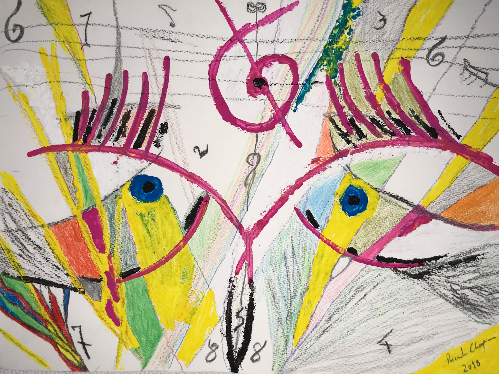
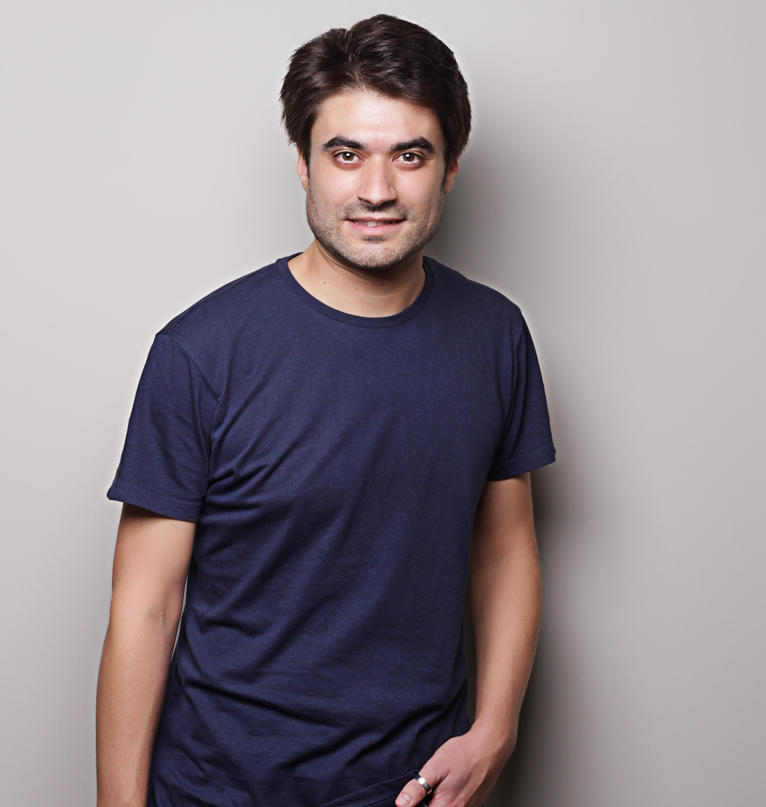

Biografia
Ricardo Choupina nasceu a 30 de Novembro de 1978 em St. Gallen - Suíça onde viveu até aos 5 anos, tendo a partir dessa idade passado a viver em Vila Nova de Gaia. Iniciou os seus estudos de música com 10 anos de idade em teclas e mais tarde em guitarra clássica. Licenciou-se em Gestão de Recursos Humanos e Psicologia do Trabalho. Com cerca de 16 anos iniciou-se na escrita de poesia aspirando à criação de uma nova corrente literária e artística, Psitacismo, sendo autor das obras poéticas intituladas Psitacismo In Versus. Mais tarde decide enveredar pela área infantojuvenil com a coleção Os Castelinhos da Cláudia, sendo Os Castelinhos da Didi - Castelos no Ar o primeiro volume, com o seu amigo e ilustrador Flávio Ferreira. Dedica-se também à pintura/desenho como autodidata. Desde sempre participou em vários projetos musicais, e nesse sentido colabora no Projeto Solidário Ser Mulher, onde é também coautor de poesia. É elemento fundador da banda ¿ WHY NOT ?.

Literatura
Ricardo Choupina possui várias obras literárias, tais como, Psitacismo In Versus - poesia - (nova corrente literária e artística) e Os castelinhos da Didi - infantojuvenil.

Pintura
Ricardo Choupina decica-se também à pintura como autodidata, apresentando uma diversidade de obras das artes plásticas, com maior relevo no óleo sobre tela.

Contactos:
Email: rcchoupina@gmail.com
Instagram: @ricardochoupina
Facebook: @ricardochoupina
Tel:. 918 417 554